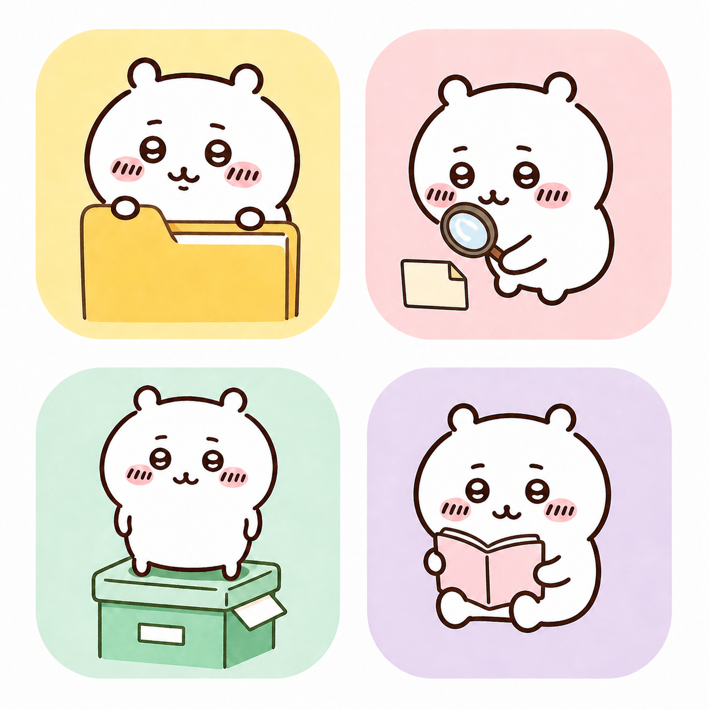

固定圆脸比例、耳朵位置、眼睛高度和腮红大小，避免不同图标出现“换了一个角色”。
Pivkey Organizer · Character Icon Review
主角图标候选稿 · 动作修订版
保留左侧文件夹与归档动作，只替换右侧两个动作：一个寻找文件，一个阅读文档。这样四个图标分别表达收纳、搜索、归档和阅读。
Review only · 当前版本不会被替换

20px 使用脸部与语义物件轮廓；32px 以上再保留手脚与小配件细节。
应用主图标、分类图标、文件类型图标、设置导航、托盘菜单与快捷方式统一使用这套角色。